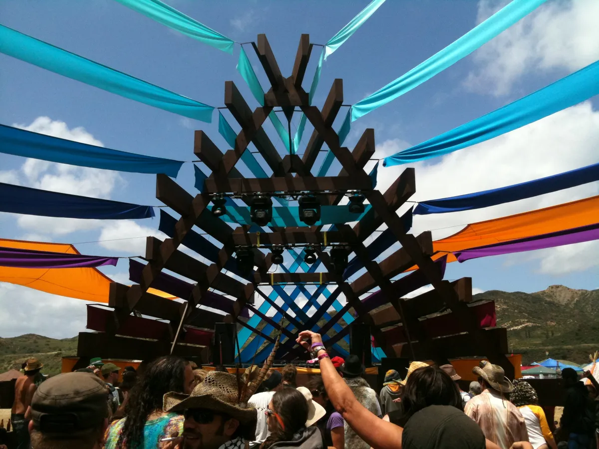
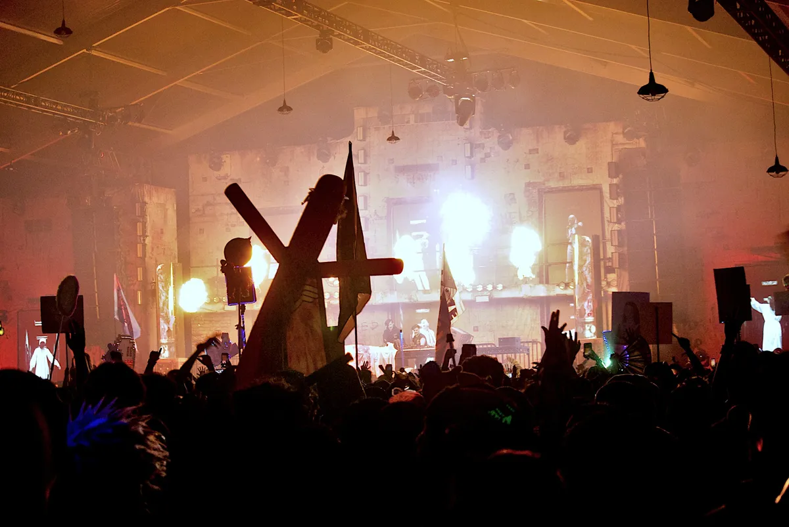

Festival guide, 2027
The best EDM festivals in and around Las Vegas in 2027
EDC and Breakaway in the city, and the festivals within driving distance in Southern California, Arizona and Utah, with the 2027 dates that are confirmed and the ones that are not.
A list meant for choosing.
The best-known EDM festival in Las Vegas is EDC, held every May at the Las Vegas Motor Speedway. The other EDM festivals Vegas holds are few: Breakaway takes over the Wynn's day club and nightclub for a weekend in June, and the clubs carry the rest of the year. Most of the other EDM festivals people from Vegas go to are a drive away, in Southern California, Arizona and Utah.
How this list was chosen.
A festival is on this list when these three things are true:
- Electronic dance music is the core of the programme.
- It is held in Las Vegas, or in Southern California, Arizona or Utah.
- It ran in 2026, and it has either published a 2027 edition or given no sign of stopping.
A date from the festival's own site is shown as confirmed. Where a festival has not yet announced 2027, the table gives its 2026 date as a guide.
EDM festival dates for 2027 at a glance.
Six festivals here have published 2027 dates: Beyond Wonderland, EDC Las Vegas, Lightning in a Bottle, Das Energi, Goldrush and Escape Halloween. The others are shown with their 2026 dates.
| Festival | Where | 2027 dates | Setting | Best for |
|---|---|---|---|---|
| Beyond Wonderland | San Bernardino, CA | 26 and 27 March | Events center | The spring opener |
| EDC Las Vegas | Las Vegas | 14 to 16 and 21 to 23 May | Motor speedway | The biggest one |
| Lightning in a Bottle | Kern County, CA | 26 to 30 May | Lakeside camping | Five days camping |
| Breakaway Vegas Takeover | Las Vegas | Not announced (12 to 14 June in 2026) | Resort day club and nightclub | A Vegas weekend in June |
| HARD Summer | Inglewood, CA | Not announced (1 and 2 August in 2026) | Outdoor site | Los Angeles in summer |
| Das Energi | Magna, near Salt Lake City | 6 to 8 August | Concert venue | Utah |
| Splash House | Palm Springs, CA | Not announced (7 to 9 and 14 to 16 August in 2026) | Hotel pools | A pool party |
| Goldrush | Chandler, AZ | 10 and 11 September | Western town | Arizona |
| Nocturnal Wonderland | San Bernardino, CA | Not announced (19 and 20 September in 2026) | Regional park, camping | Camping in September |
| CRSSD | San Diego | Not announced (spring); 26 and 27 September in 2026 | Waterfront park | A waterfront weekend |
| Escape Halloween | San Bernardino, CA | 29 and 30 October | Events center | Halloween in costume |
What is the biggest EDM festival in Vegas?
EDC Las Vegas, Insomniac's Electric Daisy Carnival, is the biggest electronic music festival Las Vegas holds. Insomniac describes it as the largest electronic dance music festival in North America.
EDC Las Vegas
EDC is held at the Las Vegas Motor Speedway. For 2027 it runs on two weekends: EDC Dusk on 14 to 16 May and EDC Dawn on 21 to 23 May. How its crowd compares with the other big American festivals is on the best EDM festivals in the US. Tickets, camping, the stages and getting there are in the EDC Las Vegas guide.
Which EDM festivals in Vegas are there besides EDC?
This list has one. Breakaway, a festival brand that tours American cities, has held a Vegas weekend at the Wynn for three years.
Breakaway Vegas Takeover, Wynn Las Vegas
Breakaway is an EDM music festival Las Vegas hosts at Encore Beach Club by day and XS Nightclub at night. The 2026 edition, its third, ran on 12 to 14 June. It's murph and Kaskade played the Friday, Major Lazer and The Chainsmokers the Saturday, and Acraze closed on the Sunday. It is for ages 21 and over, and tickets were sold through Wynn Nightlife. Breakaway has opened sales for its 2027 season but has not given a Vegas date.
What EDM events are happening in Las Vegas?
Between festival weekends, EDM in Las Vegas happens in the resort clubs, which book big-name DJs most weekends of the year. Visit Las Vegas names the main dayclubs as Marquee Dayclub at The Cosmopolitan, Palm Tree Beach Club at MGM Grand, Ayu Dayclub at Resorts World and TAO Beach at The Venetian. Its list of nightclubs has OMNIA at Caesars Palace, Hakkasan at MGM Grand, Zouk at Resorts World, LIV at Fontainebleau Las Vegas and XS at the Wynn.
AREA15, off the Strip, also hosts electronic events. Check each club's calendar for the week you are in town, since the bookings change every weekend.
EDM festivals within driving distance in California.
Most of the festivals on this list are in Southern California. Insomniac, the company behind EDC, runs three of them in San Bernardino.
Beyond Wonderland, San Bernardino
Beyond Wonderland is Insomniac's spring festival at the NOS Events Center in San Bernardino. The 2027 edition is on 26 and 27 March, for ages 18 and over.
Lightning in a Bottle, Kern County
Lightning in a Bottle is a five-day camping festival at Buena Vista Lake in Kern County. The 2027 edition is on 26 to 30 May, the week after EDC Dawn, so the two can go in one trip. It admits all ages, but anyone under 18 must come with a parent or legal guardian.

Splash House, Palm Springs
Splash House is a series of pool parties at hotels in Palm Springs, with after hours at the Palm Springs Air Museum. The 2026 edition, its thirteenth, ran on two weekends, 7 to 9 and 14 to 16 August, at The Saguaro, the Renaissance and a Hilton that replaced the Riviera. It is for ages 21 and over. The 2027 dates have not been announced.
HARD Summer, Los Angeles
HARD Summer's 2026 edition was on 1 and 2 August at Hollywood Park in Inglewood, Los Angeles County. The 2027 dates have not been announced.
Nocturnal Wonderland, San Bernardino
Nocturnal Wonderland has been held at Glen Helen Regional Park in San Bernardino since 2013, and it has camping. The 2026 edition was on 19 and 20 September, for ages 18 and over. The 2027 dates have not been announced.
Escape Halloween, San Bernardino
Escape Halloween is Insomniac's Halloween weekend at the NOS Events Center, where people come in costume. Its site lists more than 85 artists on six stages and calls it the largest music festival on Halloween. The 2027 edition is on 29 and 30 October, for ages 18 and over.

CRSSD, San Diego
CRSSD is held at Waterfront Park in San Diego twice a year, in spring and in autumn, for ages 21 and over. The Fall 2026 edition was on 26 and 27 September, and the spring 2027 dates have not been announced.
Which EDM festivals are in Arizona and Utah?
The Arizona festivals here are run by Relentless Beats, which has promoted events in the state since 1996. Utah has one, outside Salt Lake City.
Goldrush, Chandler, Arizona
Goldrush is held at Rawhide Western Town and Event Center in Chandler, near Phoenix. The 2027 edition is on 10 and 11 September, for ages 18 and over. Relentless Beats also holds Decadence Arizona at Phoenix Raceway in Avondale on 30 and 31 December 2026, and System Overload at Rawhide on 26 and 27 February 2027, both for ages 18 and over.
Das Energi, Magna, Utah
Das Energi is held at The Saltair in Magna, a 10 to 15 minute drive from downtown Salt Lake City by the festival's own account. The 2027 edition is on 6 to 8 August, for ages 18 and over. There is no camping, so you will need a hotel.
Not on this list, and why.
These are Las Vegas events people ask about that fall outside the tests above.
- UNITY at Sphere. Insomniac and Tomorrowland opened this show at Sphere over Labor Day weekend 2025. No 2026 or 2027 run has been announced. The Tomorrowland guide has more on it.
- Tomorrowland Las Vegas. A banner at the 2026 Tomorrowland listed Las Vegas for 2027, but no festival, venue or dates have been announced.
How to choose.
Start with the month. Inside the city, it is EDC in May or Breakaway in June. Away from it, Beyond Wonderland is in March, Lightning in a Bottle follows EDC in late May, and the San Bernardino and San Diego festivals fill September and October. Lightning in a Bottle and Nocturnal Wonderland have camping, and Splash House is a pool party. Goldrush and Das Energi are the choices if Arizona or Utah is easier to reach.
Then check the age limit. Breakaway, Splash House and CRSSD are for ages 21 and over. The Insomniac festivals and the Arizona and Utah ones are for 18 and over, and Lightning in a Bottle admits younger people with a parent or guardian. Several 2027 dates above have not been published yet, so confirm with the festival before you book travel.
EDM festivals in Las Vegas FAQ.
What is the biggest EDM festival in Vegas?
EDC Las Vegas, at the Las Vegas Motor Speedway, which Insomniac describes as the largest electronic dance music festival in North America. In 2027 it runs on 14 to 16 May (EDC Dusk) and 21 to 23 May (EDC Dawn).
What EDM events are happening in Las Vegas?
EDC in May, the Breakaway Vegas Takeover at the Wynn (June in 2026, 2027 not yet dated), and DJ nights at the resort clubs all year, including XS, OMNIA, Hakkasan, Zouk, LIV and Marquee Dayclub.
Which EDM festivals can you drive to from Las Vegas?
In California: Beyond Wonderland, Nocturnal Wonderland and Escape Halloween in San Bernardino, HARD Summer in Inglewood, CRSSD in San Diego, Splash House in Palm Springs and Lightning in a Bottle in Kern County. Further east, Goldrush is in Arizona and Das Energi in Utah.
Sources.
- 2027 dates from each festival's own site: EDC Las Vegas, Beyond Wonderland, Lightning in a Bottle, Goldrush, Das Energi, Escape Halloween, System Overload.
- EDC's size: Insomniac press.
- Past editions and age limits: Nocturnal Wonderland, Escape Halloween FAQ, HARD Summer, CRSSD, Splash House, Lightning in a Bottle FAQ, Beyond Wonderland FAQ, Relentless Beats.
- Breakaway Vegas Takeover 2026: EDMTunes and Breakaway.
- Splash House 2026 venues: EDM Identity. HARD Summer venue: DJ Life and 8 News Now.
- Las Vegas clubs: Visit Las Vegas.
- Tomorrowland Las Vegas: Techno Airlines. UNITY and EDC: this site's guides, linked above, which cite their own sources.
Continue reading
Read next.
 Digging~10 min read
Digging~10 min readHow to Find New Music: 10 Ways That Are Not an Algorithm
Ten ways to hear something you have not heard before, from community radio to record credits, ordered by how much work they take.
Read article → Digging~12 min read
Digging~12 min readBest Boiler Room Sets of All Time, Ranked and Measured
Eighteen sets picked for what happens in them, beside the ten most-watched, counted across 8,206 Boiler Room recordings.
Read article → Festivals~12 min read
Festivals~12 min readWhat Is Burning Man? The Event, the City and the Music
A participant-built city in the Nevada desert, with no central lineup or main stage, and the sound camps and art cars that programme their own music.
Read article → Rave spots~10 min read
Rave spots~10 min readBest Clubs in Berlin: The Legends and the Ones Still Open
The rooms that made Berlin a techno city, the famous clubs that closed, and the best clubs in Berlin that are still open.
Read article →